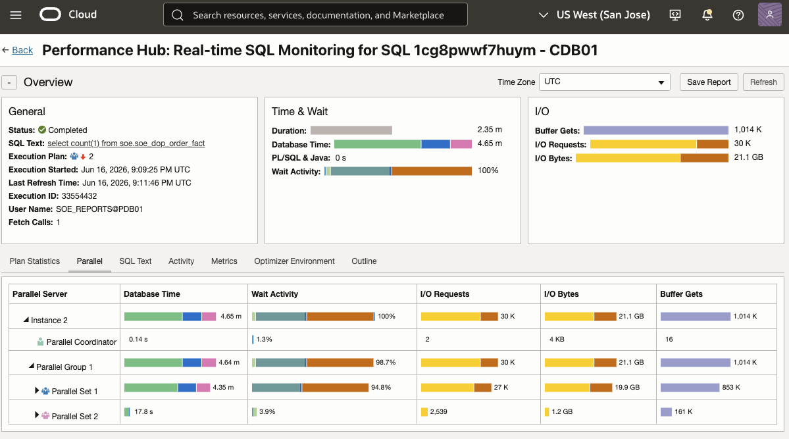

Purpose
Overview
This article extends the Connection Services configuration from the previous blog and demonstrates how to use Oracle Database Resource Manager to govern database workloads connected through dedicated OLTP, reporting, and batch services. Oracle Database Resource Manager is the database-native control plane for sessions that compete for system and database resources: it classifies sessions into consumer groups, activates a resource plan, and uses plan directives to allocate CPU, constrain parallel execution, and make workload priority explicit inside the database.
Connection Services and users provide the classification signals. The SOE account remains the schema owner and is treated as an administrative identity. Application users such as SOE_OLTP, SOE_REPORTS, and SOE_BATCH connect through workload-specific RAC services. Resource Manager then maps the user and service attributes used at login to the matching consumer group, so the same PDB can serve multiple user communities without treating every active session equally.
OLTP
CDB01_PDB01.paas.oracle.com
Preferred: CDB011, CDB012. Available: none.
Reporting
CDB01_PDB01_REPORTS.paas.oracle.com
Preferred: CDB012. Available: CDB011.
Batch
CDB01_PDB01_BATCH.paas.oracle.com
Preferred: CDB011. Available: CDB012.
The example uses the Swingbench SOE schema while keeping the Resource Manager configuration generic and reusable.
Integration pattern
Connection Services decide how clients enter the PDB; database users and roles decide what those sessions can do; Resource Manager decides how much shared database capacity each workload class can consume when OLTP, reporting, batch, and administration run at the same time.
Reference: 2. Architecture EvolutionScope map
Architecture
Connection Services identifies workload classes through dedicated RAC services. Resource Manager uses service-name mapping rules to place sessions into consumer groups, and the active plan applies directives to those groups.
Service-to-consumer-group governance flow
Users connect through workload-specific services; Resource Manager maps those sessions to consumer groups; business-hours and after-hours plans enforce the CPU and parallel execution policy.
Users
SOE_OLTP
Transactional sessions
SOE_REPORTS
Read-only reporting sessions
SOE_BATCH
Restartable batch sessions
SOE
Schema owner and administrative sessions
Connection Services
CDB01_PDB01.paas.oracle.com
Default PDB service reused for OLTP and SOE owner access
CDB01_PDB01_REPORTS.paas.oracle.com
Reporting entry point
CDB01_PDB01_BATCH.paas.oracle.com
Batch entry point
User mapping override
SOE maps to CG_ADMIN even on the default PDB service
Resource Manager
CG_OLTP
75% level-1 CPU share, serial operations
CG_REPORTING
DOP 2 business hours, DOP 4 after hours
CG_BATCH
Serial business hours, DOP 2 after hours
CG_ADMIN
50% level-1 CPU share, default DOP
Resource Plans
APP_RM_BUSINESS_HOURS
8 AM-6 PM Central: OLTP serial, reports DOP 2, batch serial
APP_RM_AFTER_HOURS
After 6 PM Central: OLTP serial, reports DOP 4, batch DOP 2
Manual plan switch
Use ALTER SYSTEM during the demo; Scheduler windows can automate later
Runtime enforcement path
Only one PDB Resource Manager plan is active at a time. Mapping rules place sessions into consumer groups, then the currently active business-hours or after-hours plan applies the CPU shares, parallel limits, and reporting timeout to those groups.
Reusable access model
Security Model
Use roles to keep the schema grants reusable and separate from service-based workload routing. The SOE account owns the Swingbench objects and should not be used as the normal OLTP application login. Create SOE_OLTP for transactional application traffic, then reserve SOE for owner or administrative operations governed by CG_ADMIN.
Run the security setup from PDB01 as SYSTEM or another approved user with DBA-level privileges in the PDB. These commands create roles and users and grant object privileges, so connecting through the PDB service first prevents accidentally running PDB-local DDL in the wrong container.
sqlplus system@CDB01_PDB01
SHOW CON_NAMESET LINESIZE 220
SET PAGESIZE 100
SET TRIMSPOOL ON
SET TAB OFF
SET SERVEROUTPUT ON
COLUMN username FORMAT A30
COLUMN service_name FORMAT A50
COLUMN resource_consumer_group FORMAT A30| User | Grants | Connection service |
|---|---|---|
| SOE | Schema owner for Swingbench SOE objects; administrative identity governed by CG_ADMIN through user mapping priority. | CDB01_PDB01.paas.oracle.com |
| SOE_OLTP | CREATE SESSION; APP_READWRITE_ROLE with DML on SOE tables, SELECT on SOE readable objects, SELECT on SOE sequences, EXECUTE on SOE program units/types, and private synonyms for SOE objects. | CDB01_PDB01.paas.oracle.com |
| SOE_REPORTS | CREATE SESSION; APP_REPORTING_ROLE with SELECT on SOE readable objects, EXECUTE on SOE program units/types for the Swingbench PL/SQL workload, and private synonyms for SOE objects used by reports. | CDB01_PDB01_REPORTS.paas.oracle.com |
| SOE_BATCH | CREATE SESSION; APP_READWRITE_ROLE with DML on SOE tables, SELECT on SOE readable objects, SELECT on SOE sequences, EXECUTE on SOE program units/types, and private synonyms for SOE objects. | CDB01_PDB01_BATCH.paas.oracle.com |
CREATE ROLE APP_READONLY_ROLE;
CREATE ROLE APP_REPORTING_ROLE;
CREATE ROLE APP_READWRITE_ROLE;Swingbench PL/SQL reporting note
The Swingbench orderentryplsql workload calls package routines during initialization and execution. If you use that workload through the reporting service for Resource Manager testing, the reporting user needs EXECUTE on SOE program units and synonyms for the package names it references. For production reporting, keep reporting access least-privilege and avoid granting executable packages that can modify data.
BEGIN
FOR obj IN (
SELECT object_name, object_type
FROM dba_objects
WHERE owner = 'SOE'
AND object_type IN (
'TABLE',
'VIEW',
'MATERIALIZED VIEW',
'SEQUENCE',
'PACKAGE',
'PROCEDURE',
'FUNCTION',
'TYPE'
)
ORDER BY object_type, object_name
)
LOOP
IF obj.object_type IN ('TABLE', 'VIEW', 'MATERIALIZED VIEW') THEN
EXECUTE IMMEDIATE
'GRANT SELECT ON SOE.' ||
obj.object_name ||
' TO APP_READONLY_ROLE';
EXECUTE IMMEDIATE
'GRANT SELECT ON SOE.' ||
obj.object_name ||
' TO APP_REPORTING_ROLE';
EXECUTE IMMEDIATE
'GRANT SELECT ON SOE.' ||
obj.object_name ||
' TO APP_READWRITE_ROLE';
END IF;
IF obj.object_type = 'TABLE' THEN
EXECUTE IMMEDIATE
'GRANT INSERT, UPDATE, DELETE ON SOE.' ||
obj.object_name ||
' TO APP_READWRITE_ROLE';
END IF;
IF obj.object_type = 'SEQUENCE' THEN
EXECUTE IMMEDIATE
'GRANT SELECT ON SOE.' ||
obj.object_name ||
' TO APP_READWRITE_ROLE';
END IF;
IF obj.object_type IN ('PACKAGE', 'PROCEDURE', 'FUNCTION', 'TYPE') THEN
EXECUTE IMMEDIATE
'GRANT EXECUTE ON SOE.' ||
obj.object_name ||
' TO APP_REPORTING_ROLE';
EXECUTE IMMEDIATE
'GRANT EXECUTE ON SOE.' ||
obj.object_name ||
' TO APP_READWRITE_ROLE';
END IF;
END LOOP;
END;
/CREATE USER SOE_OLTP IDENTIFIED BY "<password>";
GRANT CREATE SESSION TO SOE_OLTP;
CREATE USER SOE_REPORTS IDENTIFIED BY "<password>";
GRANT CREATE SESSION TO SOE_REPORTS;
CREATE USER SOE_BATCH IDENTIFIED BY "<password>";
GRANT CREATE SESSION TO SOE_BATCH;GRANT APP_REPORTING_ROLE TO SOE_REPORTS;
GRANT APP_READWRITE_ROLE TO SOE_OLTP;
GRANT APP_READWRITE_ROLE TO SOE_BATCH;BEGIN
FOR obj IN (
SELECT object_name, object_type
FROM dba_objects
WHERE owner = 'SOE'
AND object_type IN (
'TABLE',
'VIEW',
'MATERIALIZED VIEW',
'SEQUENCE',
'PACKAGE',
'PROCEDURE',
'FUNCTION',
'TYPE'
)
ORDER BY object_type, object_name
)
LOOP
IF obj.object_type IN (
'TABLE',
'VIEW',
'MATERIALIZED VIEW',
'PACKAGE',
'PROCEDURE',
'FUNCTION',
'TYPE'
) THEN
EXECUTE IMMEDIATE
'CREATE OR REPLACE SYNONYM SOE_REPORTS.' ||
obj.object_name ||
' FOR SOE.' ||
obj.object_name;
END IF;
EXECUTE IMMEDIATE
'CREATE OR REPLACE SYNONYM SOE_OLTP.' ||
obj.object_name ||
' FOR SOE.' ||
obj.object_name;
EXECUTE IMMEDIATE
'CREATE OR REPLACE SYNONYM SOE_BATCH.' ||
obj.object_name ||
' FOR SOE.' ||
obj.object_name;
END LOOP;
END;
/Workload classes
Consumer Groups
Create one consumer group per workload class so the resource plan can apply predictable CPU and parallel execution limits. Oracle documentation defines a consumer group as a collection of sessions grouped by processing needs; Resource Manager allocates resources to consumer groups rather than to individual sessions. That makes the group the correct abstraction for OLTP users, report users, batch users, and administrators.
In this guide, sessions are assigned automatically through user-name and service-name mapping rules. The Oracle user name and the database service used by the client at login are both supported mapping attributes. User-name mappings have higher priority in this pattern so SOE remains administrative even if it connects through a service that would otherwise map to a workload group.
Mapping happens at session startup
Resource Manager determines an initial consumer group from configured mapping rules. User-name mapping protects owner accounts, while service-name mapping keeps workload identity tied to the connection endpoint.
Ungrouped sessions need a policy
Oracle includes special consumer groups such as OTHER_GROUPS for sessions not assigned elsewhere. Validate your final production plan includes required fallback directives.
Assuming the same privileged PDB01 session is still open from the Security Model section, execute the following Resource Manager commands in that session.
BEGIN
DBMS_RESOURCE_MANAGER.CREATE_PENDING_AREA();
DBMS_RESOURCE_MANAGER.CREATE_CONSUMER_GROUP(
CONSUMER_GROUP => 'CG_OLTP',
COMMENT => 'Transactional workload');
DBMS_RESOURCE_MANAGER.CREATE_CONSUMER_GROUP(
CONSUMER_GROUP => 'CG_REPORTING',
COMMENT => 'Reporting workload');
DBMS_RESOURCE_MANAGER.CREATE_CONSUMER_GROUP(
CONSUMER_GROUP => 'CG_BATCH',
COMMENT => 'Batch workload');
DBMS_RESOURCE_MANAGER.CREATE_CONSUMER_GROUP(
CONSUMER_GROUP => 'CG_ADMIN',
COMMENT => 'Administrative workload');
DBMS_RESOURCE_MANAGER.SUBMIT_PENDING_AREA();
END;
/Plan directives
Resource Plan
A resource plan is the policy container that becomes effective when it is activated. Resource plan directives connect that plan to consumer groups and specify how resources are allocated to each group. Oracle documents CPU management attributes such as MGMT_P1 as the level-1 CPU allocation mechanism used by this example, documents PARALLEL_DEGREE_LIMIT_P1 as a directive attribute that limits the degree of parallelism for operations in a group, and documents switching directives such as SWITCH_GROUP and SWITCH_ELAPSED_TIME for handling sessions that cross a runtime threshold.
Create two plans for an 8 ECPU-per-VM Exascale environment. The business-hours plan, used from 8:00 AM to 6:00 PM Central Time, forces OLTP and batch operations to run serially with PARALLEL_DEGREE_LIMIT_P1 => 0, allows reporting a modest DOP 2, and cancels reporting calls that exceed 10 minutes of elapsed runtime. The after-hours plan keeps OLTP serial, raises reporting to DOP 4, and allows batch DOP 2. A DOP limit of 1 is not the same as explicitly forcing serial execution: Oracle documents 0 as the value that makes all operations serial, while 1 is still a parallel-degree limit. Each plan also includes the required OTHER_GROUPS fallback directive for sessions that do not match one of the application groups.
| Consumer Group | CPU % | Business Hours Parallel Limit | After-Hours Parallel Limit | Runtime Guardrail |
|---|---|---|---|---|
| CG_OLTP | 75 | 0 / serial | 0 / serial | None |
| CG_REPORTING | 15 | 2 | 4 | Cancel current report call after 600 seconds elapsed |
| CG_BATCH | 5 | 0 / serial | 2 | None |
| CG_ADMIN | 50 | Default / unrestricted by this directive | Default / unrestricted by this directive | None |
| OTHER_GROUPS | 0 | Default | Default | Required fallback for unmapped sessions |
Documentation-aligned validation note
Oracle documentation also describes utilization limits, active session pools, parallel statement queuing, session switching, and Resource Manager monitoring views. This guide keeps the plans narrow: CPU shares, serial OLTP operations, business-hours protection for batch, higher after-hours parallel limits for reporting and batch, a reporting elapsed-time guardrail, required OTHER_GROUPS fallback handling, service-name mappings, and runtime validation. The reporting group uses SWITCH_ELAPSED_TIME => 600 with SWITCH_GROUP => 'CANCEL_SQL' to cancel only the current report call after 10 elapsed minutes in both plans. The admin group intentionally omits a DOP limit so DBA-driven schema reorganization or maintenance can use parallelism when appropriate. Before production, validate whether your plan also needs utilization caps, active session limits, or different runaway-session handling.
If you already hit ORA-29377
Clear the pending area, then rerun the plan creation block with the OTHER_GROUPS directive included. The earlier consumer group block can remain as-is if it completed successfully.
Before creating or enabling the application plan, check the current RESOURCE_MANAGER_PLAN value in PDB01. By default, there should not be an application resource plan active for this PDB, so this check should return a blank value.
SHOW PARAMETER resource_manager_planNAME TYPE VALUE
------------------------------------ ----------- ------------------------------
resource_manager_plan stringDECLARE
c_business_plan CONSTANT VARCHAR2(30) := 'APP_RM_BUSINESS_HOURS';
c_after_hours_plan CONSTANT VARCHAR2(30) := 'APP_RM_AFTER_HOURS';
c_oltp_cpu CONSTANT PLS_INTEGER := 75;
c_reporting_cpu CONSTANT PLS_INTEGER := 15;
c_batch_cpu CONSTANT PLS_INTEGER := 5;
c_admin_cpu CONSTANT PLS_INTEGER := 50;
c_other_groups_cpu CONSTANT PLS_INTEGER := 0;
-- 0 forces serial operations. 1 is a DOP cap, not the serial switch.
c_oltp_parallel_limit CONSTANT PLS_INTEGER := 0;
c_business_reporting_parallel CONSTANT PLS_INTEGER := 2;
c_business_batch_parallel CONSTANT PLS_INTEGER := 0;
-- After hours, increase reporting and batch parallelism while keeping OLTP serial.
c_after_hours_reporting_parallel CONSTANT PLS_INTEGER := 4;
c_after_hours_batch_parallel CONSTANT PLS_INTEGER := 2;
c_reporting_elapsed_limit CONSTANT PLS_INTEGER := 600;
PROCEDURE create_workload_plan(
p_plan_name IN VARCHAR2,
p_reporting_parallel_limit IN PLS_INTEGER,
p_batch_parallel_limit IN PLS_INTEGER,
p_comment IN VARCHAR2)
IS
BEGIN
DBMS_RESOURCE_MANAGER.CREATE_PLAN(
PLAN => p_plan_name,
COMMENT => p_comment);
DBMS_RESOURCE_MANAGER.CREATE_PLAN_DIRECTIVE(
PLAN => p_plan_name,
GROUP_OR_SUBPLAN => 'CG_OLTP',
MGMT_P1 => c_oltp_cpu,
PARALLEL_DEGREE_LIMIT_P1 => c_oltp_parallel_limit);
DBMS_RESOURCE_MANAGER.CREATE_PLAN_DIRECTIVE(
PLAN => p_plan_name,
GROUP_OR_SUBPLAN => 'CG_REPORTING',
MGMT_P1 => c_reporting_cpu,
PARALLEL_DEGREE_LIMIT_P1 => p_reporting_parallel_limit,
SWITCH_GROUP => 'CANCEL_SQL',
SWITCH_ELAPSED_TIME => c_reporting_elapsed_limit,
SWITCH_FOR_CALL => TRUE);
DBMS_RESOURCE_MANAGER.CREATE_PLAN_DIRECTIVE(
PLAN => p_plan_name,
GROUP_OR_SUBPLAN => 'CG_BATCH',
MGMT_P1 => c_batch_cpu,
PARALLEL_DEGREE_LIMIT_P1 => p_batch_parallel_limit);
DBMS_RESOURCE_MANAGER.CREATE_PLAN_DIRECTIVE(
PLAN => p_plan_name,
GROUP_OR_SUBPLAN => 'CG_ADMIN',
MGMT_P1 => c_admin_cpu);
DBMS_RESOURCE_MANAGER.CREATE_PLAN_DIRECTIVE(
PLAN => p_plan_name,
GROUP_OR_SUBPLAN => 'OTHER_GROUPS',
MGMT_P1 => c_other_groups_cpu);
END create_workload_plan;
BEGIN
DBMS_RESOURCE_MANAGER.CREATE_PENDING_AREA();
create_workload_plan(
p_plan_name => c_business_plan,
p_reporting_parallel_limit => c_business_reporting_parallel,
p_batch_parallel_limit => c_business_batch_parallel,
p_comment => 'Business-hours plan: reports DOP 2, batch serial');
create_workload_plan(
p_plan_name => c_after_hours_plan,
p_reporting_parallel_limit => c_after_hours_reporting_parallel,
p_batch_parallel_limit => c_after_hours_batch_parallel,
p_comment => 'After-hours plan: reports DOP 4, batch DOP 2');
DBMS_RESOURCE_MANAGER.SUBMIT_PENDING_AREA();
END;
/Oracle creates some Resource Manager plans by default. Filter those out when the goal is to review only the application plans created for this demo.
SET LINESIZE 220
SET PAGESIZE 100
COLUMN plan FORMAT A30
COLUMN group_or_subplan FORMAT A20
COLUMN comments FORMAT A55
COLUMN mgmt_p1 FORMAT 999 HEADING 'CPU'
COLUMN parallel_degree_limit_p1 FORMAT 999 HEADING 'PAR'
COLUMN switch_group FORMAT A15
COLUMN switch_elapsed_time FORMAT 999999 HEADING 'SECONDS'
SELECT
plan,
group_or_subplan,
mgmt_p1,
parallel_degree_limit_p1,
switch_group,
switch_elapsed_time,
comments
FROM dba_rsrc_plan_directives
WHERE plan NOT LIKE 'ORA$%'
AND plan NOT IN (
'APPQOS_PLAN',
'DEFAULT_PLAN',
'DEFAULT_MAINTENANCE_PLAN',
'DSS_PLAN',
'ETL_CRITICAL_PLAN',
'INTERNAL_QUIESCE',
'INTERNAL_PLAN',
'MIXED_WORKLOAD_PLAN'
)
ORDER BY plan, group_or_subplan;If you remove the filter, the catalog can also show Oracle-maintained or precreated plans such as APPQOS_PLAN, ETL_CRITICAL_PLAN, DSS_PLAN, and INTERNAL_QUIESCE, depending on the database version and environment. Do not delete those unless Oracle documentation or Oracle Support explicitly directs you to do so. Oracle documents that Resource Manager elements are stored in data dictionary views and that some Resource Manager groups are always present or used for automatic database activity.
BEGIN
DBMS_RESOURCE_MANAGER.CREATE_PENDING_AREA();
DBMS_RESOURCE_MANAGER.DELETE_PLAN(
PLAN => '<PLAN_NAME>');
DBMS_RESOURCE_MANAGER.SUBMIT_PENDING_AREA();
END;
/BEGIN
DBMS_RESOURCE_MANAGER.CLEAR_PENDING_AREA();
END;
/User and service routing
User and Service-Based Mapping
Map owner and application users first, then map RAC service names to the consumer groups that should govern sessions entering through those services. The default PDB service CDB01_PDB01.paas.oracle.com is reused for OLTP and for SOE schema-owner access.
Resource Manager evaluates mapping attributes by priority and uses the highest-priority match for the session. In this plan, explicit switches have priority 1, Oracle user mappings have priority 2, and service-name mappings have priority 3. That means a user-specific mapping wins over a service mapping when both could apply to the same connection.
Priority 1
Explicit switch
Reserved for manual or programmatic consumer group switches.
Priority 2
Oracle user
User mappings protect SOE and route SOE_OLTP.
Priority 3
Service name
Service mappings route sessions that do not have a higher-priority user match.
| Session connects as | Connection service | Priority | Final consumer group |
|---|---|---|---|
| SOE | CDB01_PDB01.paas.oracle.com | Priority 2 | CG_ADMIN |
ORACLE_USER = SOE protects the schema owner by user mapping, so it remains administrative even on the default service. |
|||
| SOE_OLTP | CDB01_PDB01.paas.oracle.com | Priority 2 | CG_OLTP |
ORACLE_USER = SOE_OLTP explicitly routes the transactional user to OLTP. This also documents that the default PDB service is the OLTP entry point. |
|||
| Any user without a higher-priority mapping | CDB01_PDB01.paas.oracle.com | Priority 3 | CG_OLTP |
SERVICE_NAME = CDB01_PDB01.paas.oracle.com reuses the default service as the OLTP default for sessions that are not special-cased by user. |
|||
| SOE_REPORTS | CDB01_PDB01_REPORTS.paas.oracle.com | Priority 3 | CG_REPORTING |
SERVICE_NAME = CDB01_PDB01_REPORTS.paas.oracle.com classifies report sessions so they inherit the reporting DOP and 10-minute elapsed-time guardrail. |
|||
| SOE_BATCH | CDB01_PDB01_BATCH.paas.oracle.com | Priority 3 | CG_BATCH |
SERVICE_NAME = CDB01_PDB01_BATCH.paas.oracle.com classifies batch work through its dedicated service so it can be throttled separately from OLTP and reporting. |
|||
SET_CONSUMER_GROUP_MAPPING_PRI sets which mapping attribute wins when more than one rule could match a session. SET_CONSUMER_GROUP_MAPPING then creates the actual user or service rule that points to a consumer group.
For this design, ORACLE_USER => 2 and SERVICE_NAME => 3 is important because SOE and SOE_OLTP can connect through the same default service, but their user mappings still win over the service mapping.
These Resource Manager changes must also run inside a pending area, so the block opens with CREATE_PENDING_AREA and finishes with SUBMIT_PENDING_AREA.
BEGIN
DBMS_RESOURCE_MANAGER.CREATE_PENDING_AREA();
DBMS_RESOURCE_MANAGER.SET_CONSUMER_GROUP_MAPPING_PRI(
EXPLICIT => 1,
ORACLE_USER => 2,
SERVICE_NAME => 3,
CLIENT_OS_USER => 4,
CLIENT_PROGRAM => 5,
CLIENT_MACHINE => 6,
MODULE_NAME => 7,
MODULE_NAME_ACTION => 8,
SERVICE_MODULE => 9,
SERVICE_MODULE_ACTION => 10,
CLIENT_ID => 11);
DBMS_RESOURCE_MANAGER.SET_CONSUMER_GROUP_MAPPING(
ATTRIBUTE => DBMS_RESOURCE_MANAGER.ORACLE_USER,
VALUE => 'SOE',
CONSUMER_GROUP => 'CG_ADMIN');
DBMS_RESOURCE_MANAGER.SET_CONSUMER_GROUP_MAPPING(
ATTRIBUTE => DBMS_RESOURCE_MANAGER.ORACLE_USER,
VALUE => 'SOE_OLTP',
CONSUMER_GROUP => 'CG_OLTP');
DBMS_RESOURCE_MANAGER.SET_CONSUMER_GROUP_MAPPING(
ATTRIBUTE => DBMS_RESOURCE_MANAGER.SERVICE_NAME,
VALUE => 'CDB01_PDB01.paas.oracle.com',
CONSUMER_GROUP => 'CG_OLTP');
DBMS_RESOURCE_MANAGER.SET_CONSUMER_GROUP_MAPPING(
ATTRIBUTE => DBMS_RESOURCE_MANAGER.SERVICE_NAME,
VALUE => 'CDB01_PDB01_REPORTS.paas.oracle.com',
CONSUMER_GROUP => 'CG_REPORTING');
DBMS_RESOURCE_MANAGER.SET_CONSUMER_GROUP_MAPPING(
ATTRIBUTE => DBMS_RESOURCE_MANAGER.SERVICE_NAME,
VALUE => 'CDB01_PDB01_BATCH.paas.oracle.com',
CONSUMER_GROUP => 'CG_BATCH');
DBMS_RESOURCE_MANAGER.SUBMIT_PENDING_AREA();
END;
/Activation
Enable Resource Manager
After the plan and mappings are in place, connect directly to PDB01 and activate the PDB resource plan there. Oracle documentation states that a session must be in the PDB to enable or disable a PDB resource plan for that PDB.
This does not have to be a SYS session. For ALTER SYSTEM in a PDB, Oracle requires the current container to be the PDB and the connected account to have the ALTER SYSTEM system privilege, granted either commonly or locally in the PDB. A privileged account such as SYSTEM can be used if it connects to PDB01 and has that privilege; otherwise use an approved DBA account with the required privilege.
Connection check
Before setting the plan, confirm the session container with SHOW CON_NAME. If the result is not PDB01, reconnect through the PDB service or switch to the PDB before running the command.
CONNECT system@CDB01_PDB01
SHOW CON_NAME
ALTER SYSTEM SET RESOURCE_MANAGER_PLAN='APP_RM_BUSINESS_HOURS';For this blog, switch plans manually during validation. Use the business-hours plan from 8:00 AM to 6:00 PM Central Time. After 6:00 PM Central Time, switch to the after-hours plan to allow report DOP 4 and batch DOP 2. At 8:00 AM Central Time, switch back to the business-hours plan to protect OLTP.
ALTER SYSTEM SET RESOURCE_MANAGER_PLAN='APP_RM_AFTER_HOURS';ALTER SYSTEM SET RESOURCE_MANAGER_PLAN='APP_RM_BUSINESS_HOURS';Automation research note
Oracle Scheduler windows are the supported mechanism to automate time-based Resource Manager plan changes. A Scheduler window can be associated with a resource_plan; when the window opens, Oracle switches to that plan, and when the window closes, it restores the appropriate plan. For this blog, the switch remains manual so the plan change is explicit during the demo.
Demo validation flow
For demo purposes, open a separate SQL*Plus session as SOE and keep it connected. Then use a separate SYSTEM session to run the validation query. This avoids granting broad privileges to SOE and still proves that the user mapping assigns SOE to CG_ADMIN.
sqlplus soe@CDB01_PDB01
SHOW USER
SHOW CON_NAME
SELECT user FROM dual;
-- Keep this SOE session connected while SYSTEM runs the validation query.If a workload is already running
Oracle documents that a resource plan can be changed dynamically without restarting the database, and the currently active plan controls allocation for sessions in consumer groups. However, session-to-consumer-group mapping is assigned when a session is created. If uncontrolled sessions were already connected before the user and service mappings were created or activated, validate their current consumer group in GV$SESSION; reconnect or explicitly switch sessions if they are still in an unexpected group such as OTHER_GROUPS. For runaway report calls, do not rely on mid-flight activation as the only control; enable the plan before opening load to guarantee the intended classification and limits from the start of each call.
Runtime evidence
Validation
Confirm Service and Consumer Group
Run these checks from sessions connected through each service to confirm that the login mapping lands in the expected Resource Manager consumer group. Use one SQL*Plus session for the current connection check and a separate DBA-level session when you need to inspect all active user sessions in the PDB.
sqlplus SOE_OLTP/$PASSWD@CDB01_PDB01_OLTPSET LINESIZE 220
SET PAGESIZE 100
SET TRIMSPOOL ON
SET TAB OFF
COLUMN svc FORMAT A45
COLUMN cg FORMAT A32
SELECT
SYS_CONTEXT('USERENV','SERVICE_NAME') AS svc,
SYS_CONTEXT('USERENV','CONSUMER_GROUP') AS cg
FROM dual;sqlplus SOE_REPORTS/$PASSWD@CDB01_PDB01_REPORTSSET LINESIZE 220
SET PAGESIZE 100
SET TRIMSPOOL ON
SET TAB OFF
COLUMN svc FORMAT A45
COLUMN cg FORMAT A32
SELECT
SYS_CONTEXT('USERENV','SERVICE_NAME') AS svc,
SYS_CONTEXT('USERENV','CONSUMER_GROUP') AS cg
FROM dual;CONNECT system@CDB01_PDB01
SHOW CON_NAME
SET LINESIZE 220
SET PAGESIZE 100
SET TRIMSPOOL ON
SET TAB OFF
COLUMN inst_id FORMAT 999 HEADING 'INST'
COLUMN sid FORMAT 999999
COLUMN serial# FORMAT 999999
COLUMN username FORMAT A20
COLUMN service_name FORMAT A45
COLUMN resource_consumer_group FORMAT A30
SELECT
s.inst_id,
s.sid,
s.serial#,
s.username,
s.service_name,
s.resource_consumer_group
FROM gv$session s
WHERE s.type = 'USER'
AND s.username IN ('SOE', 'SOE_OLTP', 'SOE_REPORTS', 'SOE_BATCH')
ORDER BY s.inst_id, s.username, s.sid;Show the Effect of DOP by Service
Use the current Swingbench SOE schema objects for the DOP test. The setup creates a compact view over ORDERS and ORDER_ITEMS, grants it to the application roles and workload users, and gathers optimizer statistics. Then the same SQL requests DOP 16 through the OLTP and reporting services so the Resource Manager plan can cap the effective DOP by consumer group.
sqlplus SOE/$PASSWD@CDB01_PDB01SET LINESIZE 220
SET PAGESIZE 100
SET TRIMSPOOL ON
SET TAB OFF
SHOW PARAMETER parallel_degree_policy
SHOW PARAMETER parallel_degree_limit
SHOW PARAMETER parallel_threads_per_cpu
SHOW PARAMETER cpu_count
SHOW PARAMETER resource_manager_planNAME TYPE VALUE
------------------------------------ ----------- ------------------------------
parallel_degree_policy string MANUAL
NAME TYPE VALUE
------------------------------------ ----------- ------------------------------
parallel_degree_limit string CPU
NAME TYPE VALUE
------------------------------------ ----------- ------------------------------
parallel_threads_per_cpu integer 1
NAME TYPE VALUE
------------------------------------ ----------- ------------------------------
cpu_count string 4
NAME TYPE VALUE
------------------------------------ ----------- ------------------------------
resource_manager_plan string APP_RM_BUSINESS_HOURSExpected output explanation
- parallel_degree_policy=MANUAL means Oracle will not automatically choose a DOP for ordinary SQL; the demo query explicitly requests DOP with the parallel hint.
- parallel_degree_limit=CPU, parallel_threads_per_cpu=1, and cpu_count=4 show the local CPU-based parallel baseline visible to the PDB session.
- resource_manager_plan=APP_RM_BUSINESS_HOURS confirms that the business-hours plan is active while this SOE owner session prepares the demo objects.
- SOE is mapped to CG_ADMIN by the user-mapping rule, so the SOE owner session is governed by the CG_ADMIN directive.
- CG_ADMIN tops out at the CG_ADMIN directive: 50% level-1 CPU share. Even if a SOE owner query requests DOP 16, Resource Manager still governs that session under the CG_ADMIN CPU share.
- CG_ADMIN does not make the SOE owner session run at the requested DOP 16. With parallel_degree_limit=CPU, parallel_threads_per_cpu=1, and cpu_count=4, the optimizer is still bounded by the CPU-based parallel limit visible to this PDB session.
- The OLTP and reporting DOP caps are tested later with SOE_OLTP and SOE_REPORTS, not with the SOE owner session.
SET LINESIZE 220
SET PAGESIZE 100
SET TRIMSPOOL ON
SET TAB OFF
SET SERVEROUTPUT ON
CREATE OR REPLACE VIEW soe_dop_order_fact AS
SELECT
o.order_id,
o.customer_id,
o.order_total,
oi.product_id,
oi.quantity,
oi.unit_price
FROM orders o
JOIN order_items oi
ON oi.order_id = o.order_id;
GRANT SELECT ON soe_dop_order_fact TO app_reporting_role;
GRANT SELECT ON soe_dop_order_fact TO app_readwrite_role;
GRANT SELECT ON soe_dop_order_fact TO soe_oltp;
GRANT SELECT ON soe_dop_order_fact TO soe_reports;
BEGIN
DBMS_STATS.GATHER_TABLE_STATS(USER, 'ORDERS');
DBMS_STATS.GATHER_TABLE_STATS(USER, 'ORDER_ITEMS');
END;
/DOP request sizing
- The demo cluster has two nodes with 8 ECPUs on each node, for 16 ECPUs across the cluster.
- Creating
soe_dop_order_factis metadata work in the SOE owner session; it is governed by CG_ADMIN but does not prove the OLTP or reporting DOP limits by itself. DBMS_STATS.GATHER_TABLE_STATSalso runs as SOE under CG_ADMIN, so any CPU assigned to statistics gathering is controlled by the CG_ADMIN directive and the CPU-based parallel baseline visible to the PDB session.
DOP test intent
The following OLTP and reporting snippets use a lightweight sampled scan of SOE.SOE_DOP_ORDER_FACT. The statement-level parallel(16) hint still requests DOP 16 through SOE_OLTP and SOE_REPORTS, but the block sample keeps the validation focused on effective DOP instead of running the full fact-view workload.
Hint usage
The gather_plan_statistics hint does not gather optimizer table statistics. It only captures runtime row-source statistics for this one SQL statement so DBMS_XPLAN.DISPLAY_CURSOR can show the actual plan with ALLSTATS LAST. The parallel(16) hint is the statement-level request for DOP 16 that Resource Manager can reduce according to the active consumer group.
DBMS_XPLAN privilege note
For this demo, grant SELECT_CATALOG_ROLE to the workload users that run DBMS_XPLAN.DISPLAY_CURSOR. Oracle documents that DISPLAY_CURSOR needs SELECT or READ access to V$SQL_PLAN, V$SESSION, V$SQL_PLAN_STATISTICS_ALL, and V$SQL, and that these privileges are included in SELECT_CATALOG_ROLE. Keep this as a demo-only diagnostics grant unless your security model already provides an approved narrower role.
CONNECT system@CDB01_PDB01
GRANT SELECT_CATALOG_ROLE TO SOE_OLTP;
GRANT SELECT_CATALOG_ROLE TO SOE_REPORTS;sqlplus SOE_OLTP/$PASSWD@CDB01_PDB01_OLTPSET LINESIZE 220
SET PAGESIZE 100
SET TRIMSPOOL ON
SET TAB OFF
COLUMN username FORMAT A20
COLUMN service_name FORMAT A45
COLUMN resource_consumer_group FORMAT A30
SELECT
s.username,
s.service_name,
s.resource_consumer_group
FROM v$session s
WHERE s.audsid = SYS_CONTEXT('USERENV','SESSIONID')
AND s.username = USER;SET TIMING ON
SELECT /*+ gather_plan_statistics parallel(16) */
COUNT(*) sampled_fact_rows,
SUM(f.quantity * f.unit_price) sampled_line_value
FROM soe.soe_dop_order_fact SAMPLE BLOCK (1) f
WHERE f.quantity > 0;SELECT
statistic,
last_query,
session_total
FROM v$pq_sesstat
WHERE statistic IN (
'Queries Parallelized',
'Queries Serial',
'Servers Busy',
'Servers Requested',
'Servers Allocated'
);STATISTIC LAST_QUERY SESSION_TOTAL
------------------------------ ---------- -------------
Queries Parallelized 0 0Parallel verification explanation
Run this check immediately after the workload query, before displaying the cursor plan. Queries Parallelized with LAST_QUERY=0 means the last workload statement was not recorded as a parallelized query in this session. For the OLTP service, this is the clearest evidence that the consumer-group limit forced serial execution even though the SQL text requested parallel(16).
SELECT *
FROM TABLE(DBMS_XPLAN.DISPLAY_CURSOR(NULL, NULL, 'ALLSTATS LAST +PARALLEL'));SAMPLED_FACT_ROWS SAMPLED_LINE_VALUE
----------------- ------------------
3633217 1.6780E+10
Elapsed: 00:00:49.60
PLAN_TABLE_OUTPUT
----------------------------------------------------------------------------------------------------------------------------------------------------------------------------------------------------------------------------
SQL_ID 4nnk8kdkmkv14, child number 0
-------------------------------------
SELECT /*+ gather_plan_statistics parallel(16) */ COUNT(*)
sampled_fact_rows, SUM(f.quantity * f.unit_price)
sampled_line_value FROM soe.soe_dop_order_fact SAMPLE BLOCK (1) f WHERE
f.quantity > 0
Plan hash value: 1065523643
------------------------------------------------------------------------------------------------------------------------------------------------------------------------------------------------------------------
| Id | Operation | Name | Starts | E-Rows | TQ |IN-OUT| PQ Distrib | A-Rows | A-Time | Buffers | Reads | Writes | OMem | 1Mem | Used-Mem | Used-Tmp|
------------------------------------------------------------------------------------------------------------------------------------------------------------------------------------------------------------------
| 0 | SELECT STATEMENT | | 1 | | | | | 1 |00:00:33.32 | 193K| 180K| 11466 | | | | |
| 1 | SORT AGGREGATE | | 1 | 1 | | | | 1 |00:00:33.32 | 193K| 180K| 11466 | | | | |
| 2 | PX COORDINATOR | | 1 | | | | | 1 |00:00:33.32 | 193K| 180K| 11466 | 73728 | 73728 | | |
| 3 | PX SEND QC (RANDOM) | :TQ10002 | 1 | 1 | Q1,02 | P->S | QC (RAND) | 1 |00:00:33.32 | 193K| 180K| 11466 | | | | |
|* 5 | HASH JOIN | | 1 | 3923K| Q1,02 | PCWP | | 3406K|00:01:01.89 | 193K| 180K| 11466 | 197M| 18M| 165M (1)| 91M|
| 10 | PX BLOCK ITERATOR | | 1 | 3923K| Q1,00 | PCWC | | 3406K|00:00:01.47 | 33490 | 33462 | 0 | | | | |
|* 11 | TABLE ACCESS STORAGE SAMPLE BY ROWID RANGE| ORDER_ITEMS | 1 | 3923K| Q1,00 | PCWP | | 3406K|00:00:01.05 | 33490 | 33462 | 0 | | | | |
| 12 | PX RECEIVE | | 1 | 72M| Q1,02 | PCWP | | 1094K|00:00:22.30 | 159K| 135K| 0 | | | | |
| 15 | PX BLOCK ITERATOR | | 1 | 72M| Q1,01 | PCWC | | 72M|00:00:20.38 | 159K| 135K| 0 | | | | |
|* 16 | INDEX FAST FULL SCAN | ORDER_PK | 1 | 72M| Q1,01 | PCWP | | 72M|00:00:12.26 | 159K| 135K| 0 | 1028K| 1028K| | |
------------------------------------------------------------------------------------------------------------------------------------------------------------------------------------------------------------------
Note
-----
- dynamic statistics used: dynamic sampling (level=AUTO (SYSTEM))
- Degree of Parallelism is 16 because of hint
44 rows selected.
Elapsed: 00:00:00.05Expected output explanation
- The sampled row count, sum, elapsed time, buffers, reads, and writes can vary between executions because the query uses
SAMPLE BLOCK (1). Use the DOP note and PX lines as the main Resource Manager evidence. - The sample output above is the uncapped parallel-plan shape:
Degree of Parallelism is 16 because of hintmeans the optimizer accepted the requested DOP for that cursor. - For the OLTP serial test, the expected evidence is the opposite: no
PX COORDINATOR, noPX SEND/PX RECEIVE, and no DOP 16 note. That means the consumer-group limit forced the statement to run serially even though the SQL requestedparallel(16). - If PX lines do appear, check the DOP in the plan note and the PX server sets in the
TQcolumn. Entries such asQ1,00,Q1,01, andQ1,02identify separate parallel execution server sets used by the statement. - For reporting sessions, PX operations can be expected when Resource Manager allows a capped DOP. The important check is whether the displayed DOP matches the consumer-group cap, not the original DOP 16 request.
sqlplus SOE_REPORTS/$PASSWD@CDB01_PDB01_REPORTSSET LINESIZE 220
SET PAGESIZE 100
SET TRIMSPOOL ON
SET TAB OFF
COLUMN username FORMAT A20
COLUMN service_name FORMAT A45
COLUMN resource_consumer_group FORMAT A30
SELECT
s.username,
s.service_name,
s.resource_consumer_group
FROM v$session s
WHERE s.audsid = SYS_CONTEXT('USERENV','SESSIONID')
AND s.username = USER;SET TIMING ON
SELECT /*+ gather_plan_statistics parallel(16) */
COUNT(*) sampled_fact_rows,
SUM(f.quantity * f.unit_price) sampled_line_value
FROM soe.soe_dop_order_fact SAMPLE BLOCK (1) f
WHERE f.quantity > 0;SELECT
statistic,
last_query,
session_total
FROM v$pq_sesstat
WHERE statistic IN (
'Queries Parallelized',
'Queries Serial',
'Servers Busy',
'Servers Requested',
'Servers Allocated'
);SAMPLED_FACT_ROWS SAMPLED_LINE_VALUE
----------------- ------------------
3666408 1.6843E+10
Elapsed: 00:00:18.99
STATISTIC LAST_QUERY SESSION_TOTAL
------------------------------ ---------- -------------
Queries Parallelized 1 1Reporting verification explanation
Compared with the OLTP result, the reporting session completed faster because Resource Manager allowed the workload to run with parallel execution. Queries Parallelized with LAST_QUERY=1 confirms the last workload statement was parallelized in this session. The elapsed time dropped from the OLTP serial run to about 19 seconds because the reporting consumer group permits DOP while OLTP is forced to serial execution.
SELECT *
FROM TABLE(DBMS_XPLAN.DISPLAY_CURSOR(NULL, NULL, 'ALLSTATS LAST +PARALLEL'));PLAN_TABLE_OUTPUT
----------------------------------------------------------------------------------------------------------------------------------------------------------------------------------------------------------------------------
SQL_ID 4nnk8kdkmkv14, child number 0
-------------------------------------
SELECT /*+ gather_plan_statistics parallel(16) */ COUNT(*)
sampled_fact_rows, SUM(f.quantity * f.unit_price)
sampled_line_value FROM soe.soe_dop_order_fact SAMPLE BLOCK (1) f WHERE
f.quantity > 0
Plan hash value: 1065523643
------------------------------------------------------------------------------------------------------------------------------------------------------------------------------------------------
| Id | Operation | Name | Starts | E-Rows | TQ |IN-OUT| PQ Distrib | A-Rows | A-Time | Buffers | OMem | 1Mem | Used-Mem | Used-Tmp|
------------------------------------------------------------------------------------------------------------------------------------------------------------------------------------------------
| 0 | SELECT STATEMENT | | 1 | | | | | 1 |00:00:19.39 | 58 | | | | |
| 1 | SORT AGGREGATE | | 1 | 1 | | | | 1 |00:00:19.39 | 58 | | | | |
| 2 | PX COORDINATOR | | 1 | | | | | 2 |00:00:19.39 | 58 | 73728 | 73728 | | |
| 3 | PX SEND QC (RANDOM) | :TQ10002 | 0 | 1 | Q1,02 | P->S | QC (RAND) | 0 |00:00:00.01 | 0 | | | | |
|* 5 | HASH JOIN | | 0 | 3923K| Q1,02 | PCWP | | 0 |00:00:00.01 | 0 | 212M| 18M| 152M (0)| |
| 8 | PX SEND HYBRID HASH | :TQ10000 | 0 | 3923K| Q1,00 | P->P | HYBRID HASH| 0 |00:00:00.01 | 0 | | | | |
| 10 | PX BLOCK ITERATOR | | 0 | 3923K| Q1,00 | PCWC | | 0 |00:00:00.01 | 0 | | | | |
|* 11 | TABLE ACCESS STORAGE SAMPLE BY ROWID RANGE| ORDER_ITEMS | 0 | 3923K| Q1,00 | PCWP | | 0 |00:00:00.01 | 0 | | | | |
| 12 | PX RECEIVE | | 0 | 72M| Q1,02 | PCWP | | 0 |00:00:00.01 | 0 | | | | |
| 13 | PX SEND HYBRID HASH | :TQ10001 | 0 | 72M| Q1,01 | P->P | HYBRID HASH| 0 |00:00:00.01 | 0 | | | | |
| 15 | PX BLOCK ITERATOR | | 0 | 72M| Q1,01 | PCWC | | 0 |00:00:00.01 | 0 | | | | |
|* 16 | INDEX FAST FULL SCAN | ORDER_PK | 0 | 72M| Q1,01 | PCWP | | 0 |00:00:00.01 | 0 | 1028K| 1028K| | |
------------------------------------------------------------------------------------------------------------------------------------------------------------------------------------------------
Note
-----
- dynamic statistics used: dynamic sampling (level=AUTO (SYSTEM))
- Degree of Parallelism is 16 because of hint
44 rows selected.
Elapsed: 00:00:00.06Reporting plan explanation
v$pq_sesstatis the clearest comparison point: reporting recordsQueries Parallelized = 1, while OLTP recordsQueries Parallelized = 0.- The plan lines with
PX COORDINATORandTQentries such asQ1,00andQ1,01show the parallel server sets used by the reporting execution. - The result is visible in elapsed time: reporting finishes in about 19 seconds because its consumer group allows a capped DOP, while OLTP runs the same SQL serially.
OCI Performance Hub validation
After the SQL-level checks, use OCI Performance Hub to confirm the same behavior visually. The official OCI documentation describes SQL Monitoring and Real-time SQL Activity, including the Plan Statistics and Parallel views used to inspect an individual SQL execution. In this reporting example, the Parallel tab is the visual confirmation that the workload ran with a DOP of two.

parallel(16) request to DOP 2 for the reporting consumer group.
Demo cleanup
The next three snippets remove only the temporary demo artifacts created for this walkthrough: the DOP test view and the diagnostic DBMS_XPLAN catalog grants. These cleanup steps are not normally required in production because production schemas should use permanent application objects and approved operational diagnostic roles instead of temporary demo grants.
sqlplus SOE/$PASSWD@CDB01_PDB01DROP VIEW soe_dop_order_fact;CONNECT system@CDB01_PDB01
REVOKE SELECT_CATALOG_ROLE FROM SOE_OLTP;
REVOKE SELECT_CATALOG_ROLE FROM SOE_REPORTS;Operational guidance
Best Practices
- Use dedicated services for OLTP, reporting, and batch workloads.
- Map services to consumer groups.
- Keep the Resource Manager plan generic and reusable.
- Use roles instead of direct grants.
- Use reports DOP 2 and batch serial during business hours; raise reports to DOP 4 and batch to DOP 2 after hours.
- Isolate reporting and batch workloads from transactional users.
- Treat reporting and batch workloads as restartable.
- Use runtime load balancing only when using FAN-aware pools.
Summary
Connection Services plus Resource Manager
Connection Services identifies workload classes through dedicated RAC services. Resource Manager enforces CPU allocation, concurrency controls, and parallel execution limits. Together they provide a scalable governance model for Exadata Exascale deployments.
Disable plan
Disable Resource Manager
To disable the active PDB Resource Manager plan, set RESOURCE_MANAGER_PLAN back to a blank value while connected to PDB01 with an account that has the required ALTER SYSTEM privilege. This stops the PDB from using the active business-hours or after-hours Resource Manager plan.
ALTER SYSTEM SET RESOURCE_MANAGER_PLAN='';Oracle references